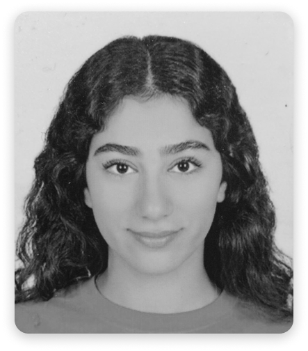
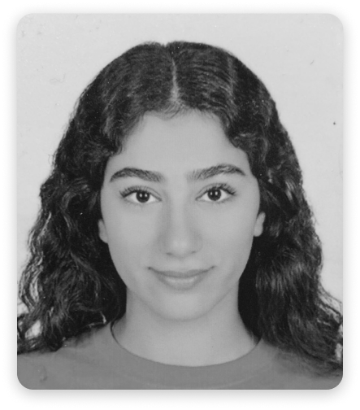

Mariam Ahmed Fahmy, a student, a daughter, a friend, a mentor; these could all be used to describe me and who I am. But my favorite descriptions are artist and designer. Ever since I was younger, I was always drawing, painting, and taking photographs, they were my favorite pastimes. Over time it turned into a hobby, and now I have started to turn it into a career. My goal is to be able to make a name for myself in the media industry, and I hope to do so by using my skills in art and photography to create something different and unique. I have high hopes for what I could become because each year I improve and each year I learn more and more.